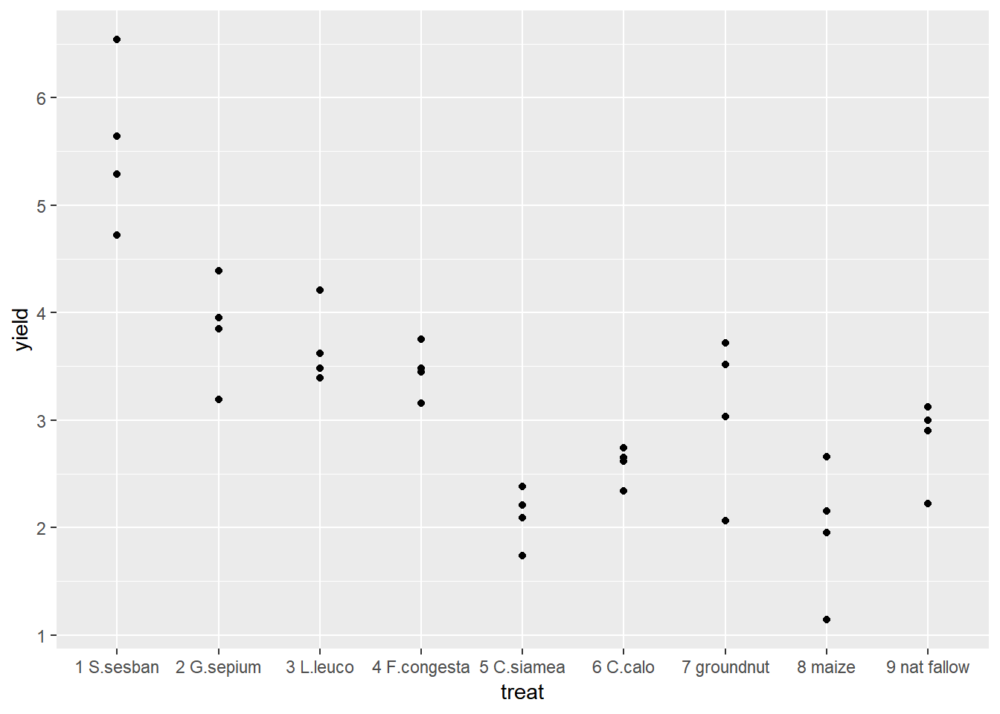
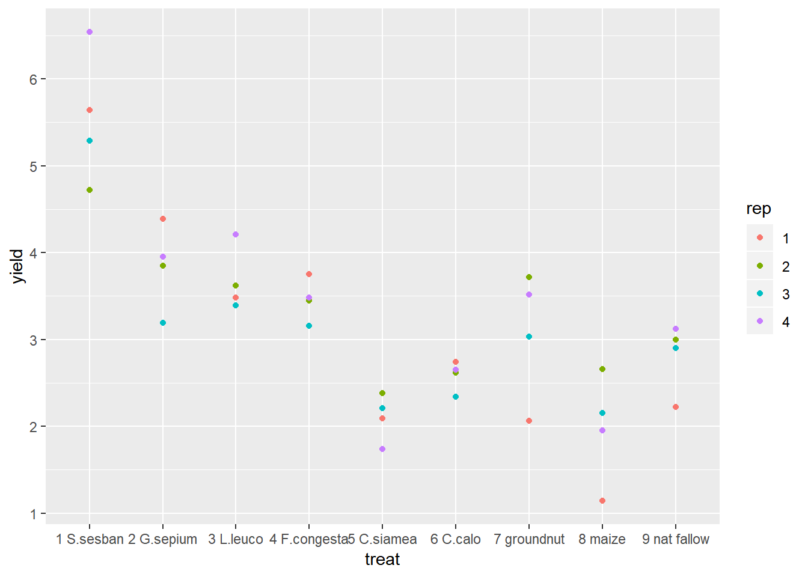
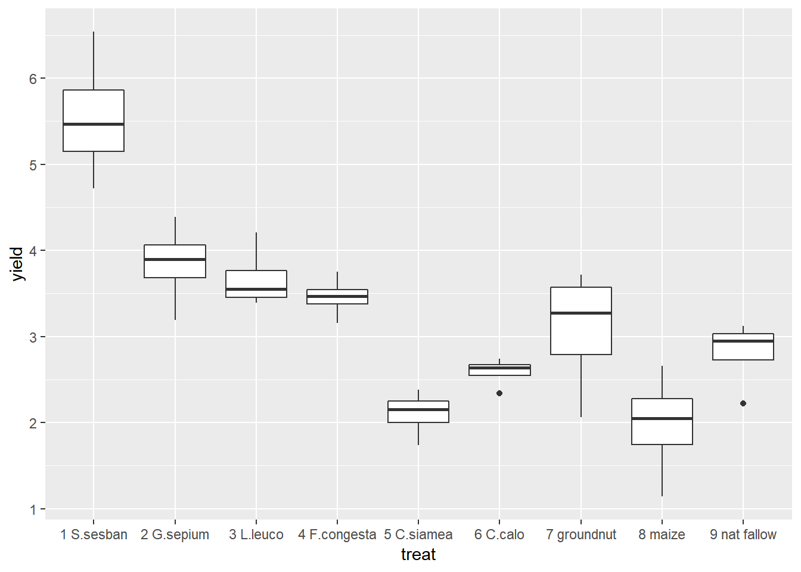
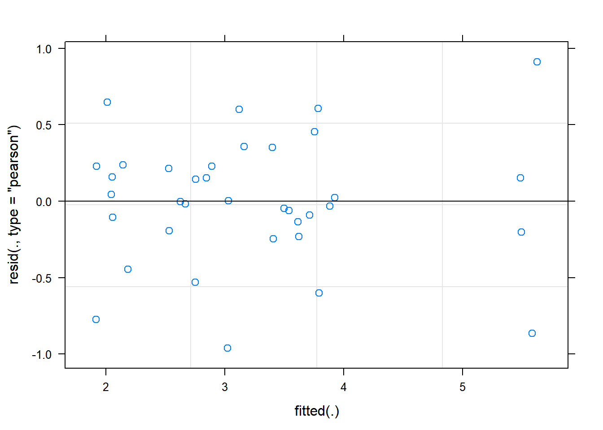
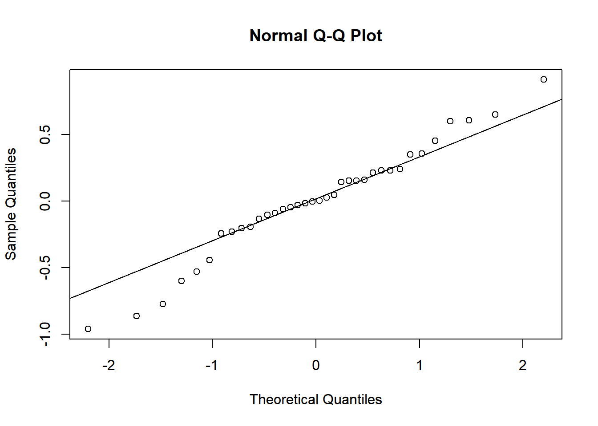
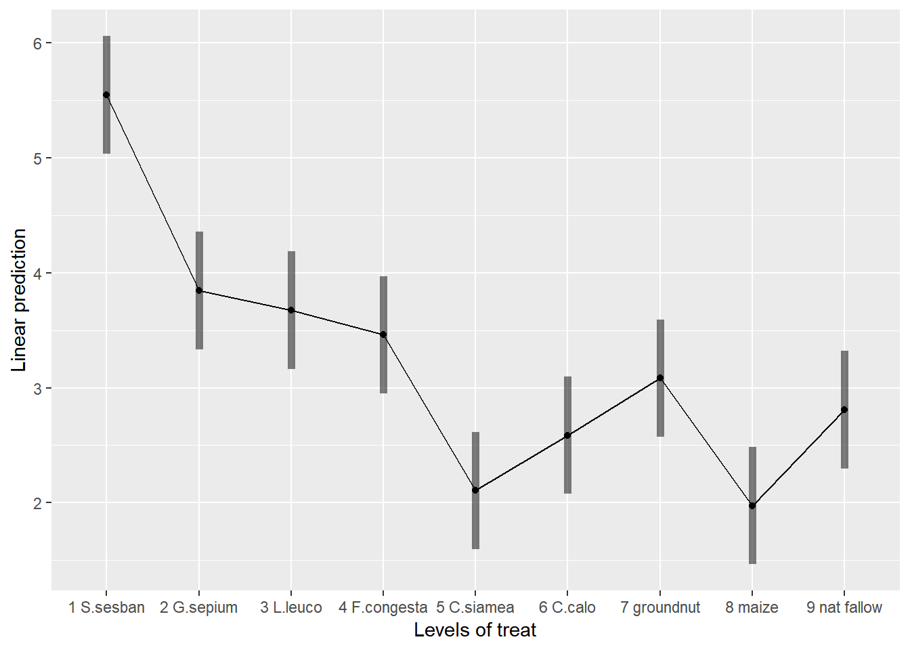

Chapter 3 Randomised Complete Block Design (RCBD)
Aim: make it easy to do standard analysis of standard experimental designs used in field trials Assumptions: you know some basic R, have R and RStudio already installed on your compuiter and you are familiar with the standard analyses of field trials.
This document will focus initially on the simple analysis of an RCBD trial using R. Section 1 provides the steps used to produce the analysis; Section 2 provides some commentary on how these commands work, what output is created, and why these commands were chosen; Section 3 deals with aspects of the statistical methodology.
3.1 About the data
The data used in this example is from a study was conducted in Eastern Zambia and the main aim was to improve on the efficiency of the natural fallows by using appropriate trees that may have relevance in soil fertility regeneration within permissible fallow periods.
The design was a randomized complete block design experiment with 4 blocks and 9 treatments was conducted. The primary outcome variable was crop yield (yield).
The objective for this analysis is to study the impact of different fallow types on crop yields.
The following steps were followed to generate the output in this document. The data was organized in excel rectangle columns with the different variables appearing in excel columns. All data checks were done in excel, meaningful data was selected and a copy of this data file was stored as a CSV file to make data import easy in R. The data file used in this analysis can be downloaded here: https://bit.ly/2rfLBEt
3.2 Section 1: Steps in analysis using R
- Install R packages needed
library(ggplot2)
library(emmeans)
library(doBy)
library(lmerTest)
library(multcompView)- Import data
fallow <- read.csv("C:/Users/Admin/Desktop/Fallow N2.csv")- Check and update data
summary(fallow)
str(fallow)
fallow$rep<-factor(fallow$rep)
fallow$plot<-factor(fallow$plot)- Explore data
ggplot(data=fallow,aes(y=yield,x=treat,col=rep))+geom_point()
summaryBy(yield~treat, data=fallow, FUN=c(min,max,mean,median,sd))- Specify a model for data
rcbdmodel1<-lmer(yield~treat+(1|rep),data=fallow)- Check the model
plot(rcbdmodel1)
qqnorm(resid(rcbdmodel1))
qqline(resid(rcbdmodel1))- Interpret the model
anova(rcbdmodel1,ddf="Kenward-Roger")
print(VarCorr(rcbdmodel1), comp=("Variance"))- Present the results from the model
emmip(rcbdmodel1,~treat,CIs = TRUE)
emmeans(rcbdmodel1, ~treat)
cld(emmeans(rcbdmodel1, ~treat))3.3 Section 2: Explanation of Steps
3.3.1 1. Install R packages needed
A number of packages following packages were used during data exploration and analysis. For a general introduction explaining what R packages are and how they work, this is a really useful guide https://www.datacamp.com/community/tutorials/r-packages-guide. For each of these packages to be installed, using install.packages(), this requires a reliable internet connection and a correctly installed version of R and RStudio. If you are having difficulties installing these packages please ask for help.
install.packages("ggplot2")
library(ggplot2)ggplot2 This package provides a powerful graphics language for creating elegant and complex graphs in R.
install.packages("emmeans")
library(emmeans)emmeans Estimated marginal means (also known as least squares means) helps provide expected mean values and confidence intervals from statistical models.
install.packages("doBy")
library(doBy)doByAllows easy production of summary statistic tables
install.packages("lmerTest")
library(lmerTest)lmerTest Allows produce of flexible mixed effects regression models, similar to REML in Genstat.
install.packages("multcompView")
library(multcompView)multcompView allows for mean seperation methods on analyses
3.3.2 2. Import data
Our data set saved as a CSV file, so we can use the read.csv commmand to import the data. We are going to assign the name of the data with R to be fallow2. Remember in R Studio you could also use the “Import Dataset” menu to import a dataset.
fallow <- read.csv("C:/Users/Admin/Desktop/Fallow N2.csv")3.3.3 3. Check and update data
When reading data into R it is always useful to check that data is in the format expected. How many variables are there? How many rows? How have the columns been read in? The summary command can help to show if the data is being treated correctly.
summary(fallow)## rep plot treat yield
## Min. :1.00 Min. :1 1 S.sesban : 4 Min. :1.140
## 1st Qu.:1.75 1st Qu.:3 2 G.sepium : 4 1st Qu.:2.370
## Median :2.50 Median :5 3 L.leuco : 4 Median :3.140
## Mean :2.50 Mean :5 4 F.congesta: 4 Mean :3.232
## 3rd Qu.:3.25 3rd Qu.:7 5 C.siamea : 4 3rd Qu.:3.728
## Max. :4.00 Max. :9 6 C.calo : 4 Max. :6.540
## (Other) :12
## striga
## Min. : 0.0
## 1st Qu.: 0.0
## Median : 21.0
## Mean : 334.1
## 3rd Qu.: 238.5
## Max. :2798.0
## Where data is being treated as a numeric variable (i.e. a number) summary provides statistics like the mean, min and max. Where data is being treated like a categorical variable (i.e. a group) then summary provides frequency tables.
From the results we can see that the variables rep and plot are being considered as numeric variables. However these are grouping variables, not number variables, the numbers used are simply codes. If we do not rectify this then our analysis later will be incorrect and meaningless.
This can also be seen more explicitly using the str() function.
str(fallow)## 'data.frame': 36 obs. of 5 variables:
## $ rep : int 1 4 4 1 1 3 3 1 3 2 ...
## $ plot : int 2 3 6 9 7 3 8 6 9 9 ...
## $ treat : Factor w/ 9 levels "1 S.sesban","2 G.sepium",..: 8 5 8 7 5 8 5 9 6 5 ...
## $ yield : num 1.14 1.74 1.95 2.06 2.09 2.15 2.21 2.22 2.34 2.38 ...
## $ striga: int 2798 0 1787 129 1 1144 0 228 0 0 ...So we need to convert these variables into factors.
fallow$rep<-factor(fallow$rep)
fallow$plot<-factor(fallow$plot)These commands take the column rep within the data frame fallow, converts into a factor and saves the result in a column called rep within fallow.
3.3.4 4. Explore data
3.3.4.1 Plots
With this code we want to summarize data fallow by yield as the response and treatment as a factor using points.
ggplot(data=fallow,aes(y=yield,x=treat))+geom_point() We could also extend this to identify which points came from which reps.
ggplot(data=fallow,aes(y=yield,x=treat,col=rep))+geom_point() Using ggplot2 we can easily change between different types of graph with small changes to the code. Boxplots are very useful if we have lots of data in each group, but in this example we only have 4 points so it is easy to visualise all of our data using a scatter plot. But the only change we would need to make to our original code is to change geom_point() to geom_boxplot().
ggplot(data=fallow,aes(y=yield,x=treat))+geom_boxplot()
From the figures produced we can see that treatment 1 has consistently high yields. The lowest yield recorded for treatment 1 is higher than the highest yield recorded for any of the other treatments. Treatments 5 and 8 had consistently low yields.
3.3.4.2 Summary Statistics
To produce summary statistics, by group, there are many options within R. One option is to use the summaryBy function, from the doBy library. The code used for this is quite similar to the code we will use to produce models in a later step.
summaryBy(yield~treat, data=fallow, FUN=mean)## treat yield.mean
## 1 1 S.sesban 5.5475
## 2 2 G.sepium 3.8450
## 3 3 L.leuco 3.6750
## 4 4 F.congesta 3.4600
## 5 5 C.siamea 2.1050
## 6 6 C.calo 2.5875
## 7 7 groundnut 3.0825
## 8 8 maize 1.9750
## 9 9 nat fallow 2.8100We can also calculate multiple statistics in the same line of code
summaryBy(yield~treat, data=fallow, FUN=c(min,max,mean,median,sd))## treat yield.min yield.max yield.mean yield.median yield.sd
## 1 1 S.sesban 4.72 6.54 5.5475 5.465 0.7625997
## 2 2 G.sepium 3.19 4.39 3.8450 3.900 0.4956813
## 3 3 L.leuco 3.39 4.21 3.6750 3.550 0.3690077
## 4 4 F.congesta 3.16 3.75 3.4600 3.465 0.2412468
## 5 5 C.siamea 1.74 2.38 2.1050 2.150 0.2708628
## 6 6 C.calo 2.34 2.74 2.5875 2.635 0.1726992
## 7 7 groundnut 2.06 3.72 3.0825 3.275 0.7407372
## 8 8 maize 1.14 2.66 1.9750 2.050 0.6318491
## 9 9 nat fallow 2.22 3.12 2.8100 2.950 0.40348483.3.5 5. Specify a model for data
In this design, an RCBD, we have one treatment factor, “treat”, and one layout factor “rep”. More information about model fitting can be found in section 2.
rcbdmodel1<-lmer(yield~treat+(1|rep),data=fallow)R is unlike many other software packages in how it fits models. The best way of handling models in R is to assign the model to a name (in this case rcbdmodel1) and then ask R to provide different sorts of output for this model. When you run the above line you will get now output from the data - this is what we expected to see!
3.3.6 6. Check the model
Before interpretting the model any further we should investigate the model validity, to ensure any conclusions we draw are valid. There are 3 assumptions that we can check for using standard model checking plots. 1. Homogeneity (equal variance) 2. Values with high leverage 3. Normality of residuals
The function plot() when used with a model will plot the fitted values from the model against the expected values.
plot(rcbdmodel1) The residual Vs fitted plot is a scatter plot of the Residuals on the y-axis and the fitted on the x-axis and the aim for this plot is to test the assumption of equal variance of the residuals across the range of fitted values. Since the residuals do not funnel out (to form triangular/diamond shape) the assumption of equal variance is met.
We can also see that there are no extreme values in the residuals which might be potentially causing problems with the validity of our conclusions (leverage)
To assess the assumption of normality we can produce a qqplot. This shows us how closely the residuals follow a normal distribution - if there are severe and syste,matic deviations from the line then we may want to consider an alternative distribution.
qqnorm(resid(rcbdmodel1))
qqline(resid(rcbdmodel1)) In this case the residuals seem to fit the assumption required for normality.
3.3.7 7. Interpret Model
The anova() function only prints the rows of analysis of variance table for treatment effects when looking at a mixed model fitted using lmer().
anova(rcbdmodel1,ddf="Kenward-Roger")## Type III Analysis of Variance Table with Kenward-Roger's method
## Sum Sq Mean Sq NumDF DenDF F value Pr(>F)
## treat 37.806 4.7258 8 24 20.146 6.981e-09 ***
## ---
## Signif. codes: 0 '***' 0.001 '**' 0.01 '*' 0.05 '.' 0.1 ' ' 1ddf=Kenward-Roger tells R which method to use for determining the calculations of the table; this option matches the defaults found within SAS or Genstat. The ANOVA table suggests a highly significant effect of the treatment on the yield.
To obtain the residual variance, and the variance attributed to the blocks we need an additional command. From these number it is possible to reconstruct a more classic ANOVA table, if so desired.
print(VarCorr(rcbdmodel1), comp=("Variance"))## Groups Name Variance
## rep (Intercept) 0.013817
## Residual 0.2345773.3.8 8. Present the results from the model
To help understand what the significant result from the ANOVA table means we can produce several plots and tables to help us. First we can use the function emmip() to produce plots of the modelled results, including 95% confidence intervals.
emmip(rcbdmodel1,~treat,CIs = TRUE)
To obtain the numbers used in creating this graph we can use the function emmeans.
emmeans(rcbdmodel1, ~treat)## treat emmean SE df lower.CL upper.CL
## 1 S.sesban 5.5475 0.2491955 26.35 5.0356 6.0594
## 2 G.sepium 3.8450 0.2491955 26.35 3.3331 4.3569
## 3 L.leuco 3.6750 0.2491955 26.35 3.1631 4.1869
## 4 F.congesta 3.4600 0.2491955 26.35 2.9481 3.9719
## 5 C.siamea 2.1050 0.2491955 26.35 1.5931 2.6169
## 6 C.calo 2.5875 0.2491955 26.35 2.0756 3.0994
## 7 groundnut 3.0825 0.2491955 26.35 2.5706 3.5944
## 8 maize 1.9750 0.2491955 26.35 1.4631 2.4869
## 9 nat fallow 2.8100 0.2491955 26.35 2.2981 3.3219
##
## Degrees-of-freedom method: kenward-roger
## Confidence level used: 0.95And one method for conducting mean separation analysis we can use the function cld().
cld(emmeans(rcbdmodel1, ~treat))## treat emmean SE df lower.CL upper.CL .group
## 8 maize 1.9750 0.2491955 26.35 1.4631 2.4869 1
## 5 C.siamea 2.1050 0.2491955 26.35 1.5931 2.6169 1
## 6 C.calo 2.5875 0.2491955 26.35 2.0756 3.0994 12
## 9 nat fallow 2.8100 0.2491955 26.35 2.2981 3.3219 123
## 7 groundnut 3.0825 0.2491955 26.35 2.5706 3.5944 123
## 4 F.congesta 3.4600 0.2491955 26.35 2.9481 3.9719 23
## 3 L.leuco 3.6750 0.2491955 26.35 3.1631 4.1869 23
## 2 G.sepium 3.8450 0.2491955 26.35 3.3331 4.3569 3
## 1 S.sesban 5.5475 0.2491955 26.35 5.0356 6.0594 4
##
## Degrees-of-freedom method: kenward-roger
## Confidence level used: 0.95
## P value adjustment: tukey method for comparing a family of 9 estimates
## significance level used: alpha = 0.05In the output, groups sharing a letter in the .group are not statistically different from each other.
3.4 Section 3 – Methodological Principles
There are always many different ways of doing all that we have done here in R. The less complex the method/code is, the better it is for you so that you can easily grasp the method.
For instance, we have fitted our model as a linear mixed effect model rather than traditional ANOVA because lmer model has the following advantages:
- They are very flexible especially where we have repeated measures, for instance you don’t need to have the same number of observations per subject/treatment.
- Ability to account for a series of random effects. Not only are farms/farmers/plots…. different from each other, but things with in farms/plots….. also differ . Not taking these sources of variation into account will lead to underestimations of accuracy.
- Allows for generalization of non-normal data.
- Handling missing data: If the percentage of missing data is small and that data missing is a random sample of the data set,data from the observations with missing data can be analysed with lmer (unlike other packages that would do listwise deletion.
- Takes into account variation that is explained by the predictor variables of interest ie fixed effects and variation that is not explained by these predictors ie random effects.
Not forgetting that selecting variables to include in our model generally depends on theory, statistics and practical knowledge the following (general) rules will be considered while fitting our models:
- Consider the Treatments (A, B,….) as fixed effects and hence presented as A*B in our model.
- Consider the layout factors as random effects and hence presented as (1|block/plot…) in our model. Generally, our model is in the form of Model<-lmer(Response~ (1|Block/Plot)+Treatment A + Treatment B…, data=Dataframe)
In this example using the fallow data, note that if we had a “completely randomised” design rather than a “blocked randomised design”, where each treatment was replicated 4 times but there were not blocks, this is a rare example of a design which cannot be handled by lmer. In this case there would be no random effects, so the function needed would be lm() rather than lmer().
Food for thought: Your best model will certainly be as good as the data you collected!!!